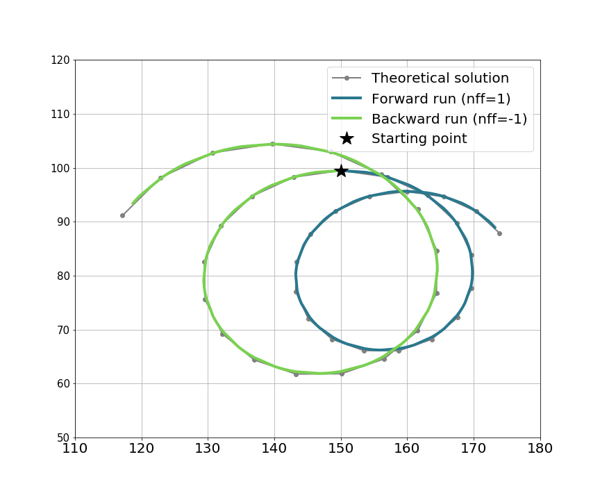
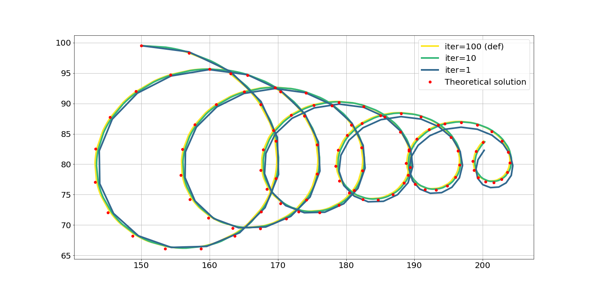

The theoretical is the default project of TRACMASS and describes the flow on a spatial homogeneous and time dependent two dimensional velocity field. The velocities are described by:
We used the same coefficients as Fabbroni (2009) with 0.3 m/s, 0.04 m/s, and a damping time 2.89 days and 28.9 days. The latitude was set to N. The velocities are read into TRACMASS every hour. TRACMASS was integrated forward in time using the time step method with intermediate steps so that the velocities were updated with linear interpolation between two time steps. The results are shown in the figure below, the small differences between the results from the truly analytical solution and the TRACMASS solution are likely due to the velocities are read every hour and not continuously.

TRACMASS features: iter choice
The results of TRACMASS are sensitive to the choice of iter. The higher value of iter, the more accurate the result of TRACMASS, however it will increase the computation time. The theoretical case is run with different iter values. As expected the highest value of iter is closer to the analytical solution while the deviation to the analytical solution becomes largest to the coarser case.
